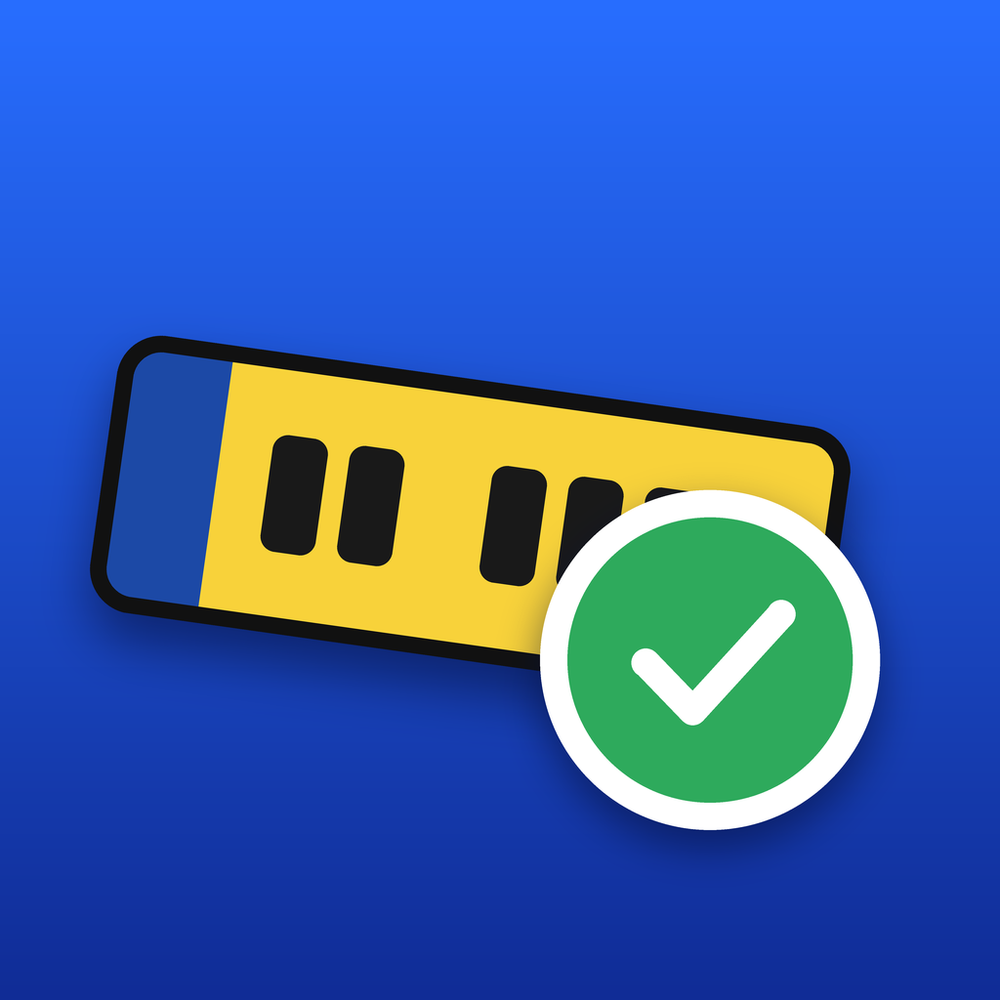

MOT MinderMOT, tax & renewal reminders for UK drivers
Enter your registration once and MOT Minder keeps track of your MOT and tax dates, reminds you before they’re due, and shows your vehicle’s MOT history, advisories and mileage.
Help & FAQs
Where do the dates come from?
MOT and tax details come from the DVLA Vehicle Enquiry Service, and MOT history from the DVSA MOT History service. The app refreshes them automatically about once a day while you use it, or pull down on a vehicle to refresh now. MOT Minder is independent and not affiliated with DVLA, DVSA or GOV.UK — always check official sources before relying on a date.
My vehicle is new and has no MOT date
In Great Britain most vehicles need their first MOT three years after first registration, so the app shows that date as “First MOT”. Northern Ireland rules differ.
When will I get reminders?
By default 30 days, 7 days and the day before each date, at 9am. Change the days and time in Settings › Reminders. If nothing arrives, check notifications are allowed for MOT Minder in iPhone Settings.
What does the clean air zone check mean?
It’s an estimate based on the fuel type and emissions standard (or first-registration date). Rules vary between zones, so always use TfL’s or the local council’s official checker before driving in a zone.
What’s in Pro?
Unlimited vehicles, the full MOT history with advisories in plain English, a mileage chart, your own reminders for insurance, servicing and more, home-screen widgets, Apple Calendar sync and the clean air zone check.
How do I restore my purchase on a new phone?
Settings › About › Restore purchases, signed in with the same Apple ID.
How do I cancel my subscription?
In the app: Settings › Manage subscription. Or iPhone Settings › your name › Subscriptions › MOT Minder. Cancel at least 24 hours before renewal.
Contact
Questions or a bug to report? Email support@bowyer.digital and we’ll get back to you.